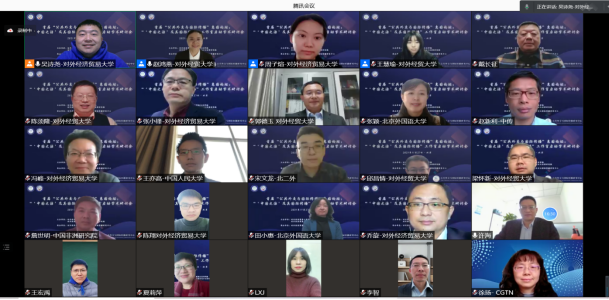
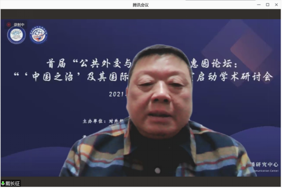
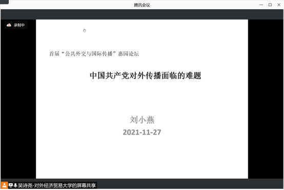
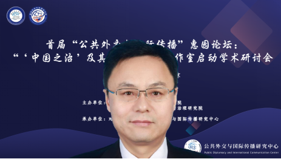

收录于合集

作者： 对外贸易经济贸易大学国际关系学院
来源： 对外贸易经济贸易大学新闻网
2021年11月27日，首届“公共外交与国际传播”惠园论坛暨“‘中国之治’及其国际传播”工作室启动学术研讨会通过线上视频会议方式在北京举办。本次论坛由对外经济贸易大学国际关系学院/国家安全与治理研究院主办，对外经济贸易大学公共外交与国际传播研究中心承办。
来自中国人民大学、中国传媒大学、北京外国语大学、中国社会科学院西亚非洲所（中国非洲研究院）、中国社会科学院亚太与全球战略研究院、外交学院、北京第二外国语学院、对外经济贸易大学、北京市委前线杂志社、中央广播电视总台CGTN等国内知名高校、科研院所、新闻媒体的25名专家学者在线研讨，近60名学者、研究者、学生、媒体记者与会。
本次论坛同时是戴长征教授主持的北京市委宣传部“文化名家工作室”——“‘中国之治’及其国际传播”工作室启动学术研讨会。论坛围绕“‘中国之治’的国际传播”这一重大话题，分三个单元进行了热烈的研讨，即传播学视域下“中国之治”的国际传播、区域国别研究视域下“中国之治”的国际传播、外交学视域下“中国之治”的国际传播。

开幕式由对外经济贸易大学国际关系学院/国家安全与治理研究院教授、对外经济贸易大学公共外交与国际传播中心主任赵鸿燕主持。对外经济贸易大学国际关系学院/国家安全与治理研究院院长、惠园特聘教授戴长征在开幕致辞中对参会的校内外专家表示感谢，对公共外交与国际传播中心进行了详细介绍，指出中心主要依托对外经济贸易大学国际关系学院、国家安全与治理研究院“两院平台”而组建的学术研究机构。中心“‘中国之治’及其国际传播”工作室的启动致力于推动校内外专家学者围绕国家重大战略问题，探索和研究公共外交、国际传播、国际谈判、跨文化传播的理论与实践问题，把我们国家特别是习主席强调的“对外传播、讲好中国故事、传播中国声音、树立中国形象”的工作做好，贯彻落实党和国家的对外战略。

戴长征教授还围绕公共外交和国际传播提出值得深入研究的问题：第一，随着中国综合实力和国力越来越强，融入全球化进程越来越深，我们需要把自己的故事讲好，把自己的经验用外国人听得懂和整个世界听得懂的语言来进行构建和传播。第二，随着中华民族伟大复兴进程的加速推进，中国的经济体量、社会发展水平、文化水平、科技水平综合的实力将会位居世界前列。但与此同时，国外对中国的政治经济形象，文化形象，社会形象，人民的形象还存在诸多误解。未来中华民族伟大复兴的事业需要得到国际社会的承认。中国的崛起就是一个融入世界的进程，需要承认世界和被世界承认。戴长征院长期待公共外交与国际传播研究中心围绕国家战略需要举办各种学术研究和活动，凝聚国内专家学者智慧，一起为中国的对外传播和公共外交事业添砖加瓦。
第一单元主题发言由对外经济贸易大学公共外交与国际传播研究中心主任赵鸿燕教授主持，本单元主题为“传播学视域下‘中国之治’的国际传播”。
中国传媒大学传播研究院教授李智对“人类命运共同体”理念的中国智慧进行了深入解读。李智教授从方法论、本体论两个方面比较分析了中国人世界观和西方人世界观的差异。李智教授认为世界是一种关系性存在，人类命运共同体是一个由国家、非国家行为体间、国家与非国家行为体间之间各种关系构成的一个全球性的关系网络，而不是由国家或者是非国家行为体构成的一种实体性的超国家政治结构。因此需要诉诸于中国传统的智慧，既要超越天下主义的世界观，也要超越西方的世界主义的世界观，来看待、理解、解读“人类命运共同体”。

中国人民大学新闻与社会发展研究中心研究员、新闻学院教授刘小燕对中国共产党对外传播面临的难题和挑战进行了深入剖析。刘小燕教授认为当前中国共产党及其执政下的政府正面临着来自美国与西方同盟的“群狼战术式”围攻。在当前国际舆论环境下，中国共产党被西方政客污名化既有影响一时难以消除、且污名化频度与烈度趋于上升。相较于对中国的了解，海外民众对中国共产党的了解相当有限，且未能在中国与中国共产党之间建立有效联系。“中国是什么”在当前已经为世界所熟知，但关于“中国共产党是什么”“中国共产党在做什么”“中国共产党为什么能”等问题对于他国民众来说还是一片亟待开发的蓝海。
中国传媒大学海南国际学院院长赵新利教授从历史档案视角，通过日本馆藏档案分析了“中国共产党为什么能”。赵新利教授通过分享日本读博期间所搜集的日本馆藏档案资料，展示了中国共产党在历史上是怎么对日本进行宣传的，这些详实的档案资料全面展现了中国共产党在历史上对外宣传的智慧。他提出国内学界应密切合作，把国外相关史料档案收集整理好，把档案史料的阐释权、解释权掌握在我们自己手里，共同做好“中国共产党为什么能”的国际传播工作。
中国人民大学新闻与社会发展研究中心研究员、新闻学院副教授王亦高从跨文化传播视角对“文明”和“文化”进行了区分：一是文明比较强调普适感，而文化强调特异感；二是文明强调全球化，文化强调区域化；三是文明更加强调的是现代性，文化更强调传统性；四是文明“只说这个词的话给人冷冰冰的感觉”，而文化是特异感的、区域化的、传统性的“暖融融的东西”。他认为未来应强化以中国文化为中心，要面向全球文明交往的一种传播学的知识体系构建。
北京市委前线杂志社研究室主持工作副主任、高级编辑许海对当前对外理论宣传的问题及其应对进行了分析。他以“人类命运共同体”、“一带一路”、孔子学院为例说明了近些年对外理论宣讲中存在的现实问题，包括国内大量工作付出与国际关注不足的矛盾，强调表层宣讲而缺乏深层理解的矛盾，认同少但误读多，有时还会引起受众逆反心理等。对于这些问题背后的深层次原因，不仅要从传播中找，更要从文化中找，还特别强调了物质生产方式的制约。从应对来看，需要从话语体系的调整到叙述方式的变革这样一种重大的改变，从而有更好的方式应对当前对外理论宣讲中的基本问题，需要叙事定位的调整、叙事内容的变化、叙事方法的改变和明确区分叙事对象。
中央广播电视总台CGTN音频节目部副主任、资深翻译徐扬从国际传播的实践视角，以CGTN为例分析了“中国之治”国际传播的目标导向和具体实践。她认为，在“中国之治”的国际传播实践中，不能够自说自话，要有受众思维，要以效果为导向，让海外受众喜闻乐见、愿意去听、愿意去看，让他们感同身受；讲故事一定少用或者不用政治语言，要用小故事来讲大道理，小切口反应大时代。国际传播音频节目要“有趣”，“有趣”才能吸引海外受众听。
对外经济贸易大学国际关系学院/国家安全与治理研究院副教授、公共外交与国际传播研究中心研究员邱昌情对本单元专家主题发言进行了深度评议。他提出，近年来中国在物质性崛起方面已经取得了举世瞩目的成就，影响力越来越大，但在非物质崛起方面还有很多工作要做，当前中国在国际社会中的形象与大国地位仍存在一定的不对称性。他指出，面对西方对中国舆论的软施压，我们需要创新宣传方式，扩展宣传主体，宣传主体不能局限于官方机构，也要充分发挥民间、智库、NGO的潜力。在话语的影响力方面，目前诸如软实力这样的词语都是西方制造出来的。我们既要解构西方主导的话语，也要提出自己的新概念、新表述。中国的公共外交和对外传播仍面临着众多挑战，但这项工作对于中国未来的崛起非常重要，各位专家、学者、一线工作人员都任重道远。
第二单元主题发言由对外经济贸易大学国家安全与治理研究院常务副院长、惠园特聘教授、公共外交与国际传播研究中心研究员陈须隆主持，本单元的主题是“区域国别研究视域下‘中国之治’的国际传播”。
北京外国语大学国际关系学院教授、《国际论坛》编辑部副主任、《区域与全球发展》编辑部主任张颖介绍了“一带一路”倡议提出以来拉美主流报纸中对中国的报道。张颖教授选择三个拉美的重要国家巴西、阿根廷、哥伦比亚，运用定性分析与定量分析相结合的研究方式，分析三大主流报纸对于中国国家形象的建构。关于如何改善或提高我们在拉美的国家形象，张颖教授认为需要进一步提升媒体的公信力，加强与当地主流媒体的合作，聚焦拉美地区受众关系的议题，同时也需要多利用新媒体的平台拓展传播渠道，充分构建多元化的传媒体系，使传媒方式更加多元化。
中国社会科学院西亚非洲所（中国非洲研究院）副研究员、《西亚非洲》编辑部主任詹世明分析了中国发展经验在非洲传播面临的困难与挑战。他认为中国需要总结哪些发展经验适合于非洲，在这些方面下大力气。他提倡中国与非洲互学互鉴，不仅中国的发展经验值得非洲国家学习，实际上我们在很多方面也可以向非洲国家学习。还需要正确看待大国在非洲的竞争，非洲对外合作是开放的合作，尤其是促进非洲共同发展的方面，我们和其他国家的竞合关系要处理好。
对外经济贸易大学商务汉语基地副主任、副教授郭德玉以日本孔子学院为案例，分析了当前孔子学院发展的机遇和挑战。他详细介绍了孔子学院在海外目前的发展情况和发展经验。他以自己在日本孔子学院任中方院长的实地经验，认为当前孔子学院面临的最大的挑战是多变的国际形势以及新冠疫情的挑战。孔子学院如何通过特色的发展，通过适合对方、所在国、所在地方、所在大学有需求化的发展，真正融入到当地、融入到大学、融入到地方国家的文化，起到很好的交流作用，这是未来一个需要思考的问题。
中国社会科学院亚太与全球战略研究院《南亚研究》编辑部副主任、副主编、副编审毛悦从印度视野看中国形象的演变及其意义。她将印度视野的中国形象演变分为四个历史时期并指出，冷战结束后，印度战略界各派别对于印度大国梦想和中国在其中作用的理解不同，塑造了不同的中国形象。印度视野中的中国形象特征为精英视野、多面性、文化差异产生误读、西方滤镜带来误读。影响印度视野中中国形象的因素包括印度的处境和诉求、印度世界观的变化、来自西方的影响等。她探讨了印度视野中中国形象演变的意义：一是印度对中国形象的认识与两国之间的力量对比密不可分，二是印度对其在世界中的地位认识有变化，三是印度对中国的态度极为复杂，四是思考中印之间缺乏基础交流的原因，五是印度对中国的看法与中国对自身的看法存在巨大差异。
对外经济贸易大学国关学院/国家安全与治理研究院副教授、公共外交与国际传播研究中心研究员冯峰对本单元专家的主题发言进行了精彩评议。他提到，拉美国家在政治文化上深受西方影响，和中国存在较大差异，这让他们对中国的印象总体上偏负面。处理好与拉美国家的关系，既要符合双方利益，又要以他们乐于接受的方式。基于中国发展经验在非洲的传播，他认为我们需要持续关注、追踪不同国家对于中国国家形象的认识，逐渐形成资料库来作为国家政策的重要依据。他表示，日本孔子学院案例在实际工作基础上产生的关于孔子学院发展的深刻见解对他产生了很大的启发。他也赞同中印之间不能通过西方的滤镜来观察彼此，否则可能会造成双方的误读，加深彼此的误解。
对外经济贸易大学国际关系学院/国家安全与治理研究院副教授、公共外交与国际传播研究中心研究员乔旋主持了第三单元讨论。本单元主题是“外交学视域下的‘中国之治’的国际传播”。
外交学院科研处处长夏莉萍教授从中非人文交流角度谈“中国之治”国际传播，分享了她带领非洲国家访华团去宁夏考察、卢旺达调研等亲身经历案例，说明中非双方对于工作时间的不同期望展现出的较大文化差异，如何让非洲访华团成员亲身感受到中国的快速发展、中国共产党制度的优越性及党员的先锋模范作用，以及所感受到的卢旺达民众对于中国共产党长期执政领导的认可。夏莉萍教授提出了对“中国之治”传播的几点看法：一是“请进来”，让受众亲身体会中国政治制度的优越性；二是传播内容要精心设计、注重细节、打动人心，注意共鸣以及受众的诉求；三是传播效果要做到细水长流、润物无声；四是人文交流时需要注重平等，而且要把它落实到每一个环节。
外交学院外交学系梁晓君副教授认为国际谈判是一种特殊的国际传播，每个人都是国际传播的载体，每个人的行为举止都影响到国际形象，都在做国际传播。她认为在国际谈判时构建良好的关系同国际传播的目的是一致的。她使用国际谈判信任来源的三个维度即威慑性的信任、认知性信任和认同性信任，以此作为国际传播的分析框架，对1954年周恩来总理参加日内瓦会议的国际传播成功案例进行分析，从中寻找国际传播的路径和方法。梁晓君副教授与王亦高副教授就跨文化传播中“文明与文化”话题进行了互动，她提出，虽然文化的独特性很重要，但在国际传播中“共性”更重要，因此，适当保留个性，从共性出发才更容易获得他人的理解。
北京外国语大学国际关系学院院长助理田小惠副教授分析了后疫情时代欧盟一体化的发展与中国对欧国际传播。她认为中欧之间存在不同的文化、价值观、哲学思想，长期以来存在不同的意识形态的差异，欧洲对华认知的偏差和抹黑的情况变得越来越严重和明显。她认为中国对欧盟、欧洲的国际传播可能应从以下方面进行：一是官方层面斗而不破，二是在数字经济、绿色经济、全球性议题、中东和平、非洲发展、气候变化等方面加强沟通交流的渠道，三是扩大人文交流和民间交流的渠道，四是针对欧盟内部的异质性、发达国家和次发达地区及国家存在的异质性进行有针对性传播。
北京第二外国语学院的政党外交学院国际政治系主任宋文龙博士剖析了网络取消文化与西方身份政治的国际传播。他认为取消文化是指一种抵制行为，尤其是网络上发起的抵制行为，社交媒体上一些知名人物因为说了一些令人反感或者不能接受的言论被各种舆论抵制，取消文化代表了西方广大精英阶级取消长期垄断的话语权。由于中国网络环境和文化的独特性，受到取消文化和身份政治的影响相对小一些，但也不能忽视。

对外经济贸易大学党委常委、宣传部长张小锋教授进行了总结评议。张小锋教授指出，国际传播是党和国家面临的重大时代课题，习近平总书记对做好国际传播发表了很多的见解，提出了很高的要求，也树立了国际传播的典范。各位专家要抱团取暖、聚合力量，产生舆论场，同时要带好学生、同事、国际友人，甚至包括学生家长在内的队伍，形成合力。在传播方式方面，张小锋教授认为，既要陈情又要说理，既要把“中国之治”、“中国奇迹”讲清楚，又要注意方式方法，要用小切口展现中国的大情怀、大格局、大道理；积极引导学生和国际学者，善用小故事叙述中国智慧、中国方案；要敢于斗争、善于斗争，面对诋毁中国的行为和错误观点，要主动发声，要有志气、骨气、底气和胆识，也要用新技术、巧方法和好手段去回应。
对外经济贸易大学国际关系学院/国家安全与治理研究院讲师、公共外交与国际传播研究中心研究员吴诗尧作为本次论坛腾讯会议幕后主持人，为会议专家提供了全程的会务服务与技术支持。
本次研讨会是围绕国际传播议题，汇聚国际关系、政治学、外交学、新闻传播学、区域国别研究等众多专家、学者、业内精英的跨学科、多维度学术研讨，通过研讨和互动碰撞出思想火花，产生出丰硕的成果。本次研讨会是“公共外交与国际传播”惠园论坛、“中国之治”及其国际传播工作室系列学术研讨会的组成部分。对外经济贸易大学公共外交与国际传播中心依托对外经济贸易大学国际关系学院、国家安全与治理研究院“两院平台”，将在公共外交与国际传播学领域开展深入研究、提供咨询分析、完善学科体系，并积极服务于国家需求。
排版 | 陆霜滢
本文章来源于“对外经济贸易大学新闻网”
文章观点不代表本平台观点